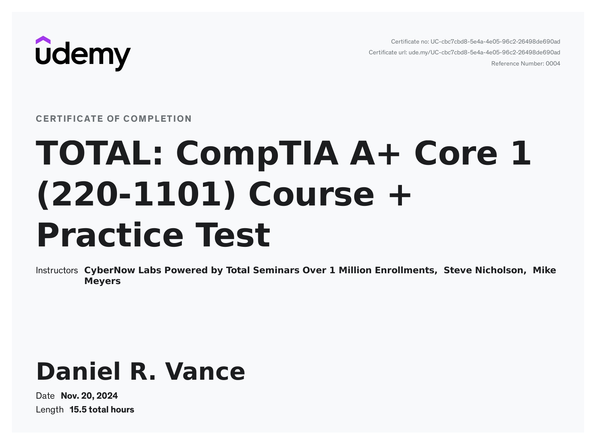

- CompTIA A+ (220-1101) and (220-1102)
with Steve Nicholson and Mike Meyers 
Hello my name is Daniel Vance! Welcome to my Portfolio website!
There isn't much to see here but what is here strongly pertains to technology.
I hope that you find something of interest here and If you'd like to learn more, feel free to contact me.
Currently I am working on completing my Associates in Information Technology, I have a Bachelors in Information Systems.
During my studies working towards the end of my Bachelors degree, I really wanted to go into technology.
While my Bachelors did not focus on learning computer hardware or network configuration and installation etc. it did prepare me for software development.
And I do like developming software but what I really like is technology.
During my time after graduation I discovered that many of the jobs that I wanted to do required a further understanding of information technology.
So I took it upon myself to make the decision of getting my Associates in IT to prepare me just for that.
To further supplment my Associates, I'm working towards completing some nationally recongnized IT Certification's like CompTIA.